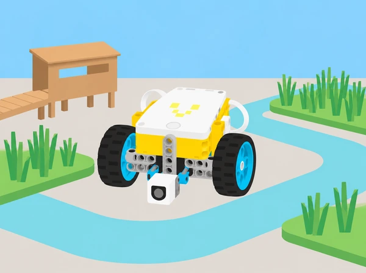
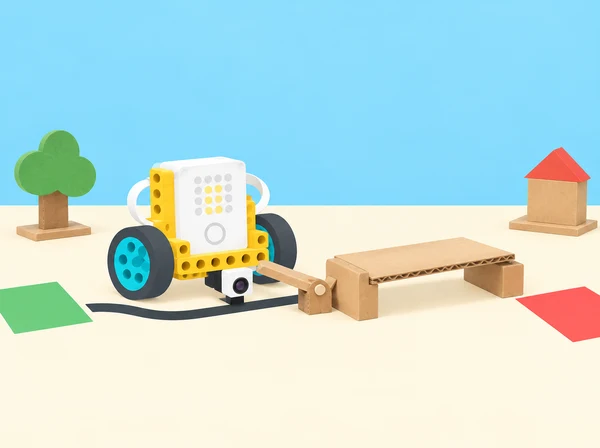
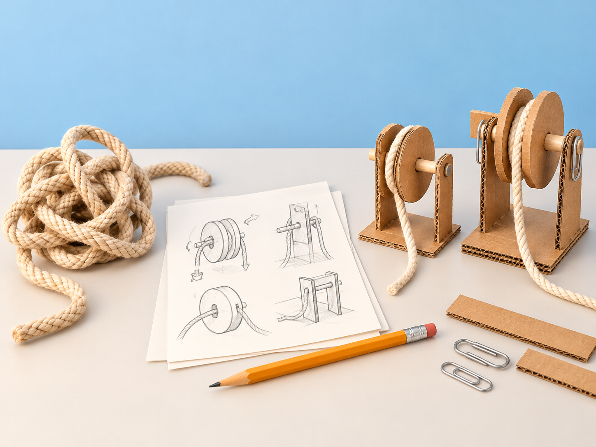

Missió de robòtica cooperativa
🏷️ L’Albufera i la cura de l’entorn
🌱 Situació, repte i intenció
La seqüència oficial inclou en 2026–27 una missió guiada vinculada a FIRST LEGO League. La sessió 4 conserva l’estructura didàctica de preparar una ruta, alinear el robot, activar un model i valorar fiabilitat i estratègia, però usa un repte, un camp i models propis. No reprodueix ni representa la missió, el tapet o els materials oficials de la temporada.
🎯 Aprenentatges i vocabulari
- Construir i calibrar una base mòbil, i registrar com canvien la ruta i la precisió quan s’ajusta una variable.
- Integrar moviment, sensors de línia i mecanismes per resoldre missions de camp amb rols cooperatius.
- Comparar intents, localitzar una fallada i justificar la revisió amb dades de proves repetides.
- Comunicar què ha resolt el robot, quina decisió ha pres l’equip i quins límits conserva la maqueta ambiental.
🧰 Materials i preparació
Per a les sessions amb robot: set SPIKE Prime 45678, base de conducció, sensor de distància i sensor de color, cinta negra, cartó, retoladors, mostres grans i lleugeres i cinta per al camp. La base avançada oficial consta de dos motors grans per a la propulsió, dos motors mitjans per als útils i dos sensors de color; necessita l’Expansion Set 45681 a més del set 45678.
Les sessions 5–8 indiquen aquesta dependència i no afirmen que la base de dos motors siga equivalent. Sense l’expansió, es pot seguir l’objectiu didàctic amb un únic motor mitjà del set base i útils alternats/passius; anoteu aquesta reducció. La sessió 9 només necessita paper, llapis i cartó.
Prepareu el camp sobre taules o al terra, amb carrils prou amples, objectes grans i zones de mans fora del moviment. La referència a l’Albufera és una contextualització educativa: useu dades i mostres fictícies i no feu proves ni recollides al medi natural.
📅 Seqüència didàctica
Base i conducció precisa · Training Camp 1: Driving Around (30–45 min)
Fase 1 · Activem i prediem
Fase 2 · Explorem i construïm
En parelles, munteu una base de dos motors sense sensors i proveu els programes de mostra. Varieu distància, gir o velocitat d’una cosa cada vegada.
Fase 3 · Expliquem i registrem
Escriviu pseudocodi per al quadrat, mesureu la circumferència de la roda (π × diàmetre) i relacioneu-la amb la distància avançada. Registreu el recorregut en segons, graus i rotacions; el giroscopi és una ampliació opcional.
Fase 4 · Apliquem i millorem
Afegiu un recorregut entre obstacles grans. Feu tres passades amb paràmetres iguals i després canvieu un control; com a ampliació, recorreu dos metres i compareu també el sensor disponible.
Fase 5 · Comprovem i reflexionem
Acostar-se, agafar i tornar · Training Camp 2: Playing with Objects (30–45 min)
Fase 1 · Activem i prediem
Fase 2 · Explorem i construïm
Afegiu sensor de distància, braç lleuger, marcador i cub tou a la base. Compareu dos programes per parar davant del marcador; després programeu el braç perquè baixe, arreplegue el cub a almenys 30 cm i el retorne.
Fase 3 · Expliquem i registrem
Ajusteu l’alçada del braç perquè passe per damunt del cub sense interferir amb el sensor. Registreu tres intents i observeu com canvia la lectura en modificar el llindar.
Fase 4 · Apliquem i millorem
Feu un relleu: el robot porta un testimoni, una persona el retira i la base continua. Prioritzeu detecció fiable per damunt del temps; proveu comparacions > / < amb distància, llum reflectida o giroscopi només si estan disponibles.
Fase 5 · Comprovem i reflexionem
Detectar i seguir línies del camp · Training Camp 3: Reacting to Lines (30–45 min)
Fase 1 · Activem i prediem
Fase 2 · Explorem i construïm
Munteu el sensor de color i proveu una línia negra ampla sobre superfície clara. Programeu la base perquè avance i pare en detectar-la; després proveu una segona pila i descriviu la diferència.
Fase 3 · Expliquem i registrem
Observeu lectures en mode de color i d’intensitat reflectida sobre blanc i negre. Anoteu què llig el sensor i no confongueu el nom de color amb el valor reflectit.
Fase 4 · Apliquem i millorem
Per al seguiment continu, alterneu detecció de fosc i clar amb moviments ràpids. Proveu línies primes, angles rectes, cruïlles T, interrupcions i línies de color; canvieu llindar o velocitat d’un en un.
Fase 5 · Comprovem i reflexionem
Missió guiada: elevar el pont de mostreig · The Guided Mission 2026–27 (90 min; versió breu 45 min)
Fase 1 · Activem i prediem
Abans de construir, dibuixeu el recorregut, assenyaleu on caldrà alinear la base i definiu què vol dir «missió completada»: el pont articulat s’alça, la ruta no desplaça cap estació i el robot s’atura dins de la zona final.
Fase 2 · Explorem i construïm
Munteu la base de conducció amb el sensor de color SPIKE Prime i reviseu-ne l’orientació i l’alçada respecte del camp. Feu una línia negra ampla sobre una pista clara i un model original amb una palanca de cartó articulada: una peça lleugera a la part frontal empeny la palanca perquè eleve el pont; no useu el model ni el tapet LEGO de la temporada. Proveu la palanca a mà i després amb el robot a potència baixa.
Afegiu una zona d’eixida a cada costat i marqueu dos punts d’alineament propers al mecanisme. El pont ha de ser lleuger, estable i sense vores tallants.

Fase 3 · Expliquem i registrem
Calibreu el sensor sobre la línia i el fons en el mode triat —color o intensitat de llum reflectida— i anoteu lectures repetides. Escriviu un programa propi: iniciar en la zona esquerra; seguir la línia amb girs curts a baixa potència; arribar al punt de contacte; empényer la palanca fins que el pont s’alce; continuar cap a la zona dreta i parar. Registreu la posició de partida, el llindar o color seleccionat, la velocitat, l’estat del pont i el lloc d’aturada.
Si el sensor no discrimina amb estabilitat, useu una línia més ampla i torneu a mesurar abans de canviar el programa.
Fase 4 · Apliquem i millorem
Feu quatre intents comparables: dos a baixa velocitat i dos a velocitat moderada, amb la mateixa col·locació inicial i el mateix camp. En cada prova, anoteu si segueix la línia, activa la palanca, passa al costat de les dues estacions sense tocar-les i arriba a la zona final; mesureu també la desviació lateral en acabar i, si és viable, el temps del mateix equip. Després canvieu una sola variable —alineament, llindar o velocitat— i repetiu dues vegades.
Compareu la fiabilitat amb la rapidesa i justifiqueu quin ajust és més útil; el temps només compara les iteracions del mateix equip i no es publica ni s’utilitza per ordenar grups. Com a extensió, afegiu una segona parada pròpia després del pont i comproveu si la base pot completar les dues tasques en una mateixa ruta; o comenceu des de la zona dreta i redissenyeu el seguiment.
Fase 5 · Comprovem i reflexionem
Cada membre explica una part de la missió mostrant el robot, el programa i les dades de prova. La graella docent observa quatre indicadors: seguir la línia amb un criteri mesurat; activar el pont; completar la ruta evitant les estacions; explicar una decisió de velocitat/alineament amb evidència. En l’autoavaluació individual, marqueu «hem completat una missió», «hem completat també una segona parada» o «totes les persones hem presentat programa i estratègia».
Una altra parella dona un retorn constructiu amb una observació i una proposta comprovable per al següent intent. Com a extensió de llengua i orientació professional, l’equip explica quina estratègia ha reduït el temps del seu propi recorregut sense perdre precisió i relaciona el treball amb disseny d’enginyeria o programació; no es comparen ni publiquen temps entre equips.
Aquesta proposta adapta eixos d’aprenentatge semblants en un camp i un mecanisme locals, sense reproduir el tapet, el model ni la missió de FIRST LEGO League.
Una base modular construïda en equip · Assembling an Advanced Driving Base (90–120 min)
Fase 1 · Activem i prediem
Fase 2 · Explorem i construïm
Cada persona construeix la part assignada en la seua instrucció; després, l’equip uneix les quatre parts, comprova les connexions de cables i els ordena perquè no freguen les rodes ni s’enganxen. La base avançada usa dos motors grans per a propulsió, dos motors mitjans per als útils i dos sensors de color, i requereix l’Expansion Set 45681 a més del 45678. Abans d’engegar, compareu les rodes amb la base de pràctica i reviseu que cada mòdul quede ferm.
Fase 3 · Expliquem i registrem
Executeu primer el programa inicial i després els altres programes d’exemple per observar com es mou la base. Registreu qui ha muntat cada part, quin port o cable connecta i una característica estructural que aporta al conjunt. Separeu els errors de muntatge dels errors del programa: abans de reprogramar, inspeccioneu la unió, el port i el recorregut del cable.
Fase 4 · Apliquem i millorem
Si no hi ha Expansion Set, feu els rols modulars sobre la base de dos motors i marqueu-la com a adaptació reduïda; no afirmeu que heu muntat la base avançada. Per adaptar la dificultat, treballeu les parts de les instruccions per parelles. Com a extensió, doneu a l’equip les instruccions d’un sol costat de l’eix i demaneu que complete l’altre per simetria; després, programeu una ruta entre obstacles grans sense colpejar-los.
Cada membre ha d’explicar quina part ha construït i com contribueix a la base.
Fase 5 · Comprovem i reflexionem
El meu bloc, el nostre programa · My Code, Our Program (90–120 min en la seqüència oficial; adaptar la durada al kit disponible)
Fase 1 · Activem i prediem
Fase 2 · Explorem i construïm
Amb la base avançada o la base de pràctica amb limitació escrita, construïu dos marcadors i proveu el programa My Block de mostra. Creeu un bloc propi per a una ruta quadrada i expliqueu què queda dins del bloc i què continua en el programa principal.
Fase 3 · Expliquem i registrem
Feu blocs separats per a cercle aproximat i triangle, decidiu la mida amb els marcadors i registreu quines ordres queden reutilitzades. Abans de programar cada figura, cada persona ha de poder predir quin bloc s’executarà i descriure què fa; així es comprova que el codi compartit és comprensible per tot l’equip.
Fase 4 · Apliquem i millorem
Intercanvieu programes amb una altra parella perquè els execute sense explicació oral. Reordeneu els blocs per a una missió diferent i compareu llegibilitat i facilitat de modificació. Com a ampliació matemàtica, mesureu la distància recorreguda en una rotació o un nombre de graus, calculeu la circumferència de la roda amb π × diàmetre i useu-la per estimar la distància; el giroscopi i un recorregut complex cronometrat són extensions opcionals, sense classificar equips.
Fase 5 · Comprovem i reflexionem
Cada persona presenta un programa i explica com un My Block ordena, simplifica o permet reordenar les instruccions. Autoavaluació individual: blau, he creat un My Block; groc, n’he creat dos o més; violeta, he preparat diversos programes i els he reordenat per canviar l’acció de la base. Una parella revisora dona una puntuació formativa i un comentari constructiu per a la pròxima prova.
Dos útils i un programa amb arrays · Time for an Upgrade (90–120 min)
Fase 1 · Activem i prediem
Fase 2 · Explorem i construïm
En la versió completa, munteu la pala i el braç elevador, fixeu-los amb els connectors rojos i connecteu-los a la base avançada; construïu quatre caixes lleugeres. Executeu el programa de prova i observeu que el braç s’alça. Abans de cada tasca, establiu com reinicialitzar la posició dels motors i comproveu que l’útil queda bloquejat i no interfereix amb el sensor.
Fase 3 · Expliquem i registrem
Descomponeu la tasca en acostar, elevar/baixar, empényer o alçar, alliberar i reiniciar; programeu ordres perquè cada útil puga pujar i baixar i compareu-les amb el comportament de mostra. Creeu dos arrays paral·lels: el primer guarda l’operació prevista per a cadascuna de les quatre caixes i el segon, el resultat observat. Compareu els elements del mateix índex i expliqueu què significa cada posició;
si l’entorn disponible no ofereix arrays en blocs, feu aquesta part en Python o amb dues llistes de targetes i declareu la representació usada.
Fase 4 · Apliquem i millorem
Proveu els quatre casos i compareu precisió, força i encaix de cada útil. Canvieu una propietat cada vegada i repetiu les proves. Com a extensió, adapteu un útil per a una càrrega diferent o acosteu-vos a les caixes en angle amb un giroscopi disponible i una prova de posicionament. Sense Expansion Set, useu una base de dos motors i útils de cartó, i declareu el canvi: no replica la base motoritzada ni els seus resultats.
Fase 5 · Comprovem i reflexionem
Cada persona presenta com la base usa els útils i com la seua forma ajuda a completar la tasca. Autoavaluació individual: blau, he usat un array; groc, n’he creat un segon; violeta, he fet més d’una operació amb arrays. Una parella revisa el resultat i dona un comentari constructiu amb una prova següent.
L’abordatge en angle amb giroscopi és una ampliació opcional.
Repte de camp complet i cronometrat · Mission Ready (120+ min, més d’una sessió)
Fase 1 · Activem i prediem
Fase 2 · Explorem i construïm
Prepareu un mòdul de joc de cartó, un camí propi i dos marcadors de camp. Les cinc fites originals són: (1) empényer un actuador per alliberar el pas; (2) pressionar una palanca; (3) passar entre els marcadors sense tocar-los; (4) seguir la ruta i arreplegar quatre mostres fictícies de llavor; (5) deixar-ne almenys una en una zona segura, a 50 cm del model de niu. Useu pala i braç només amb el kit avançat;
amb el set bàsic, simplifiqueu les accions i documenteu-ho.
Fase 3 · Expliquem i registrem
Escriviu pseudocodi abans de programar cada fita, reutilitzeu My Blocks i poseu noms clars a variables i blocs. L’equip guanya una marca per cada fita completada, una marca addicional si arreplega les quatre mostres, i en guanya una altra per al lliurament segur de 50 cm. Prepareu fins a sis fitxes d’incidència: cada contacte amb un marcador o cada vegada que una persona alça/recol·loca el robot consumeix una fitxa i obliga a registrar la causa abans de reprendre.
Les fitxes no resten punts ni serveixen per comparar equips; el criteri és revisar el programa i completar amb seguretat. Les mostres són peces fictícies i no impliquen animals.
Fase 4 · Apliquem i millorem
Feu intents sense cronòmetre fins que el programa siga estable; després, si l’equip vol, mesureu el seu propi temps en una execució final. Registreu les fites completades, les fitxes d’incidència consumides, el temps propi i les fallades; canvieu una sola cosa i repetiu almenys la prova que havia fallat. El temps s’usa per explicar l’estratègia de l’equip, mai per fer una classificació.
Fase 5 · Comprovem i reflexionem
Cada membre presenta una part del robot, del programa o de l’estratègia. Autoavaluació individual: blau, he completat almenys una fita; groc, l’equip ha completat les cinc; violeta, totes les persones han presentat robot, programa i estratègia. Una altra parella dona retorn constructiu amb una observació i una millora comprovable. Com a extensió de llengua i orientació professional, prepareu una presentació de l’estratègia més eficient i relacioneu el disseny amb enginyeria o emprenedoria.
Taller desconnectat de resolució creativa · Mission Training: Creative Problem-Solving (45 min, híbrida)
La sessió trasllada al context de l’Albufera el procés de disseny d’enginyeria de la lliçó: definir criteris, idear, fer i provar un prototip, iterar i comunicar què s’ha descobert. No calen el set SPIKE Prime, peces LEGO ni programari. Es treballa amb materials reutilitzats i una solució manipulable de baixa complexitat; cap repte requereix construir un robot.
Fase 1 · Activem i prediem
Reserveu 10 minuts. Mostreu la imatge del nus que cal desfer i doneu temps perquè tothom pense abans de parlar. Acordeu una definició compartida de resoldre creativament i demaneu que el grup identifique el problema, propose almenys dues maneres d’abordar-lo, trie què provaria primer i anticipe què canviaria si no funciona. Tanqueu amb una definició breu d’iteració: repetir un procés per acostar-se al resultat desitjat, avaluant i revisant la solució quan cal.

Fase 2 · Explorem i construïm
Reserveu 15 minuts. Cada alumne o equip tria un repte i escriu primer què ha de passar perquè la solució siga vàlida. Les quatre opcions inspirades en la lliçó són: A) portar una mostra fictícia fins a una persona o punt de recepció; B) activar un dispositiu de maqueta prement-lo; C) rescatar una llavor de paper d’una zona delimitada, empenyent-la, estirant-la o subjectant-la; D) voltejar una fitxa plana, que representa una targeta de mostreig. Són tasques de manipulació sobre una taula;
no s’usen líquids, animals ni objectes fràgils.
Seguiu en equip aquests cinc moviments, deixant una traça en el quadern:
- Identifiquem: triem el repte i formulem el resultat observable.
- Ideem: dibuixem dues solucions possibles amb els materials disponibles i n’escollim una segons els criteris acordats.
- Creem: fem un primer prototip amb cartó, paper, cordill o altres materials reutilitzats.
- Iterem: provem-lo, anotem què ha passat i canviem una característica; tornem a provar-lo.
- Comuniquem: expliquem què ha funcionat, què hem descobert i com la prova ha guiat la millora.
El prototip no ha de funcionar a la primera. Si l’alumnat és a casa, pot treballar sobre una superfície plana i neta amb el material que tinga; si no disposa de materials, pot fer el disseny i la iteració amb dibuixos seqüenciats.
Fase 3 · Expliquem i registrem
Reserveu 10 minuts. Feu una ronda breu de comunicació: cada equip explica com va planificar la solució i quins criteris va definir, mostra la idea creativa, relata una descoberta feta durant les proves i identifica una millora concreta del prototip. Demaneu exemples observables —«la fitxa va caure quan…», «hem canviat l’angle i ara…»— en compte d’afirmacions generals. La resta escolta i formula una pregunta respectuosa; el retorn ha d’ajudar a comprendre el procés, no a jutjar qui ha acabat abans.
Fase 4 · Apliquem i millorem
Reserveu 5 minuts. Cada equip documenta el procés amb un pòster, una pàgina del quadern o un vídeo breu: problema i criteris, esbós inicial, prototip, resultat de la prova i canvi introduït. Feu una galeria de treballs. En modalitat presencial es poden visitar les taules; en línia, mostrar el prototip en una reunió o compartir-ne una fotografia; en modalitat asíncrona, publicar el dibuix, l’explicació escrita o una gravació curta perquè els companys la puguen comentar.
Fase 5 · Comprovem i reflexionem
Reserveu 5 minuts. Cada alumne comparteix una iteració o una solució creativa descoberta i s’autoavalua: una mà si encara necessita ajuda per explicar estratègies i iteracions; dues mans si ja les pot descriure; mans enlaire si pot ensenyar a una altra persona com descriure-les. Accepteu com a resposta una explicació oral, escrita, dibuixada o gravada.
Evidències: criteris de disseny, dues idees inicials, esbós, prototip, registre de prova i millora, explicació del descobriment i autoavaluació individual. La temporització suma 45 minuts (10 + 15 + 10 + 5 + 5); la fase de construcció pot continuar en una altra sessió sense canviar els criteris. Adaptació pròpia de la lliçó híbrida: es mantenen el cicle de disseny, els quatre tipus de repte, la prova iterativa, la comunicació, la documentació i l’autoavaluació;
el context, els objectes, les instruccions i la imatge són originals.
🧪 Evidències i avaluació
Recolliu pseudocodi, taules de calibratge, lectures del sensor, mapa de missió, esquemes de construcció, blocs propis, comparació d’accessoris, dades de fiabilitat i prototip desconnectat. Valoreu si l’equip pot predir i explicar el comportament, aïllar una variable, justificar una revisió amb dades, documentar el codi i repartir les decisions. Una missió fallida aporta evidència útil quan queda registrada i ajuda a formular la prova següent; els punts i el temps no són l’únic criteri.
♿ Participació, accessibilitat i seguretat
Abans del robot es pot resoldre cada ruta amb una maqueta i targetes de moviment. Oferiu rols rotatius de construcció, programació, pilotatge de proves i registre; faciliteu instruccions visuals, carrils d’alt contrast, marques tàctils fora de la trajectòria i temps addicional per documentar. Les missions no depenen de velocitat manual: una persona pot dictar o validar el codi mentre una altra manipula el robot.
El repte desconnectat és una sessió completa, no un premi de consol ni un requisit per accedir a la resta.
🔗 Referents i adaptació
La seqüència adapta les nou lliçons de Competition Ready · SPIKE Prime: Driving Around, Playing with Objects, Reacting to Lines, The Guided Mission 2026–27, Assembling an Advanced Driving Base, My Code, Our Program, Time for an Upgrade, Mission Ready i la lliçó híbrida Mission Training. El catàleg indica durades d’entre 30 i 120+ minuts; per això les activitats de construcció, projecte i missió s’estenen en més d’una classe.
Els textos, el context, les missions, el camp, les regles i els materials visuals són propis. Les especificacions de components es basen en la pàgina oficial de maquinari SPIKE Prime; comproveu sempre la dotació física del centre.